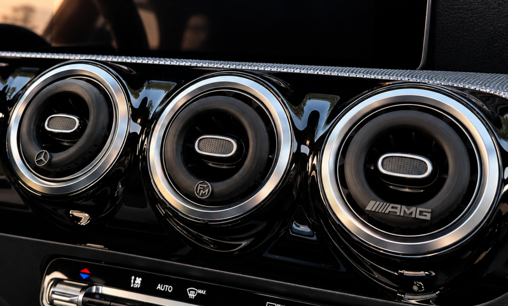
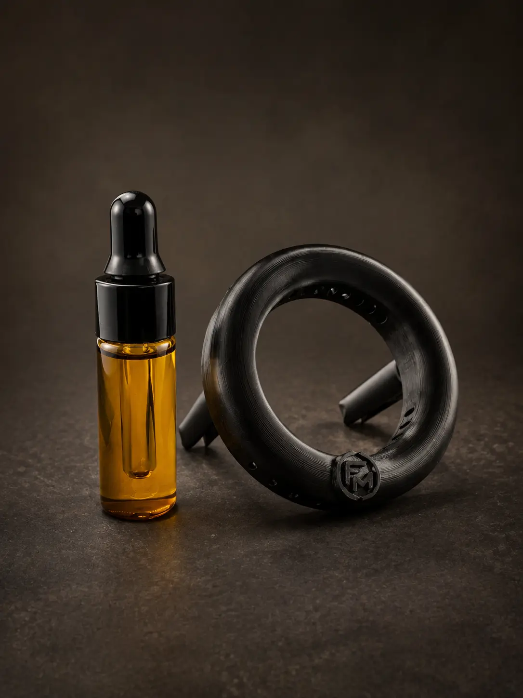
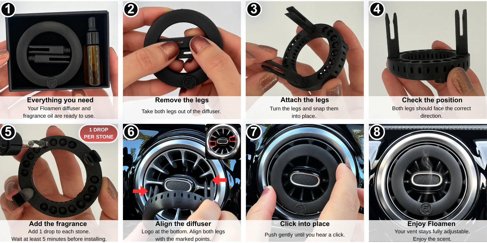
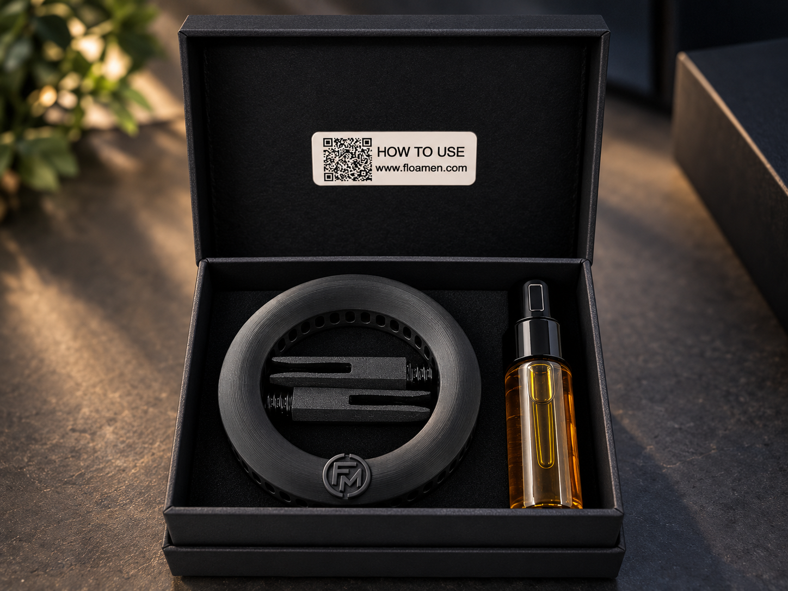
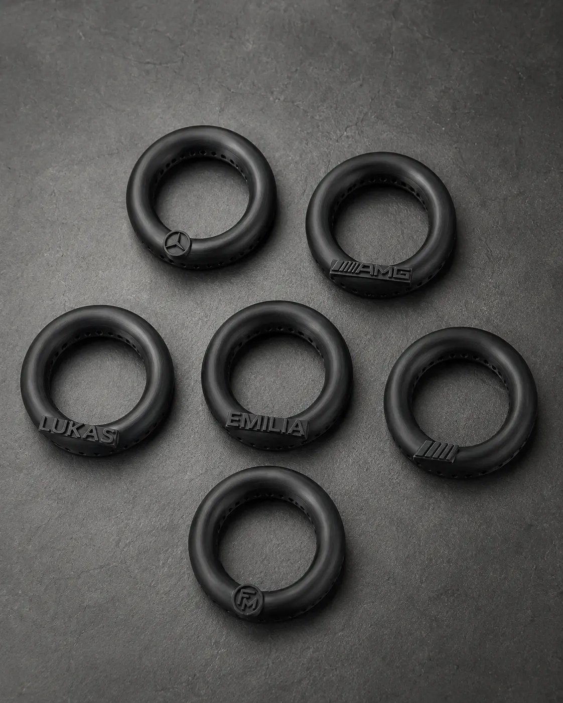
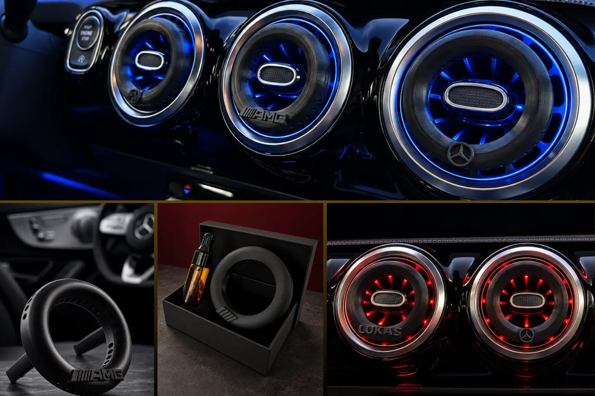

FLOAMEN / AUTO-DUFT
Entworfen und hergestellt
in Deutschland.
A reusable fragrance diffuser created to integrate naturally with selected round turbine-style air vents.
EINGETRAGENES DESIGN


ALLTAG NEU GEDACHT
Duft,
gestaltet für
die Fahrt.
FLOAMEN verbindet ein wiederverwendbares Duftsystem mit einem minimalistischen, integrierten Design. Duftöl wird von Lavasteinen im Inneren aufgenommen und durch den Luftstrom nach und nach freigesetzt.
Wiederverwendbar. Nachfüllbar.
Bewusst gestaltet.
PASST SICH AN
Für den Luftausströmer gestaltet.
Nicht darüber.
Die offene Mitte lässt die originale Luftdüsen-Steuerung sichtbar und zugänglich. Der Luftstrom bleibt auch nach der Montage einstellbar.
Entwickelt für ausgewählte kompatible Mercedes-Benz Fahrzeuge mit runden Turbinen-Luftausströmern.
ANWENDUNG
Von der Vorbereitung bis zur Montage.

DEINE INSTALLATIONSANLEITUNG
Sieh FLOAMEN in Aktion.
Sieh dir an, wie du deinen FLOAMEN Duftspender nachfüllst und montierst.
DAS FLOAMEN SET
Alles, was du
für den Start brauchst.
Jedes Set enthält einen FLOAMEN Duftspender, zwei abnehmbare Steckfüße und eine 5-ml-Flasche Duftöl.
Green Tea & Lemon Duft inklusive.

EINE PERSÖNLICHE NOTE
Mach ihn zu deinem.
Wähle das FLOAMEN FM-Logo oder personalisiere die Vorderseite mit einem Namen. Kurze Namen mit bis zu sechs Zeichen eignen sich am besten. Weitere Optionen findest du auf Etsy.
Auf Etsy kaufen3D-gedruckt. Fein verarbeitet.
Individueller Charakter in Schwarz.

TEIL DEINES INTERIEURS
Passt sich deinem Interieur an.
Ein dezentes Design, das die Linien des Innenraums aufgreift, statt ihn zu dominieren.

EIN KLEINES DETAIL. JEDE FAHRT.
Bring FLOAMEN
auf deine Fahrt.
Entdecke verfügbare Varianten und Personalisierungen auf Etsy.
Auf Etsy kaufen